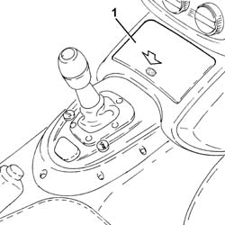
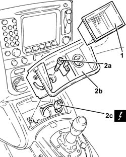

7065C42 ASHTRAY (ONE) R+R
- Path
- Procedures > 70 FITTINGS > 7065 SEAT BELTS AND ACCESSORIES > 7065C ACCESSORIES AND DECORATIONS > 7065C42 ASHTRAY (ONE) R+R
- Kind
- repair procedure (removal / refitting; the operation number is the code)
- Applies to
- all engines; all production periods
- Interactive page
- https://sloeber94.github.io/elrnDB-aGt/en/#/125001999
Applies to: all engines; all production periods
 Removing
Removing
 Refitting
Refitting- Make sure that the ignition key is in the OFF position, then disconnect the battery terminal (-).
1. Open the ashtray cover by pressing it and releasing it.

Applies to: all engines; all production periods
1. Extract the ashtray compartment.
2. Undo the bolt (2a) and extract the ashtray support (2b) as far as necessary to disconnect the electrical connection (2c).
Description | Connector | |
|---|---|---|
2c | Cigar lighter/power point | See P50 CIGARETTE LIGHTER/POWER SOCKET |
- Remove the ashtray mounting

Applies to: all engines; all production periods
Refitting
Removing- Connect the electrical connection, then place the ashtray support back in its housing and secure it using the bolt.
- Place the ashtray compartment back in its housing.
- Close the ashtray cover.
- Connect the negative battery terminal.